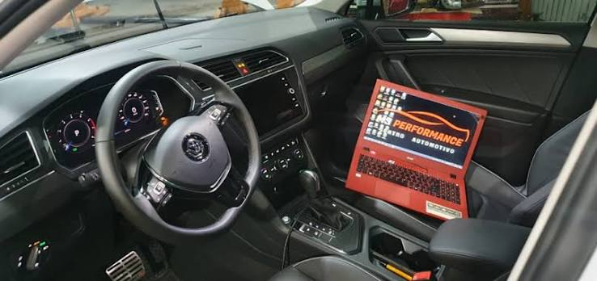
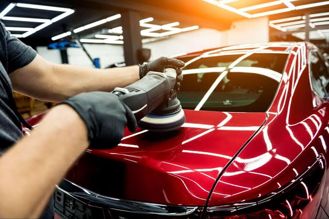
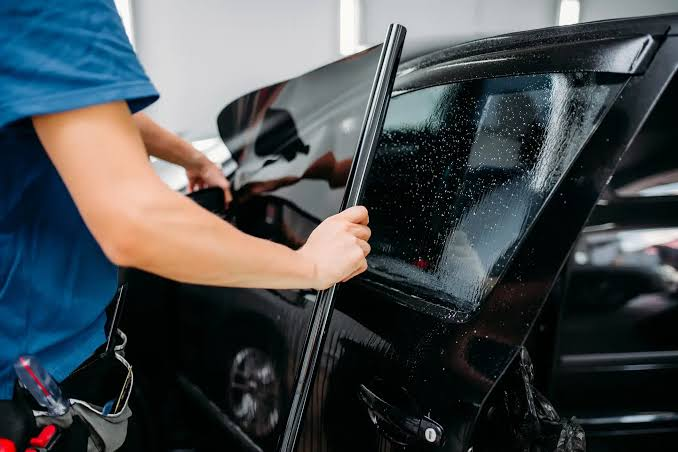
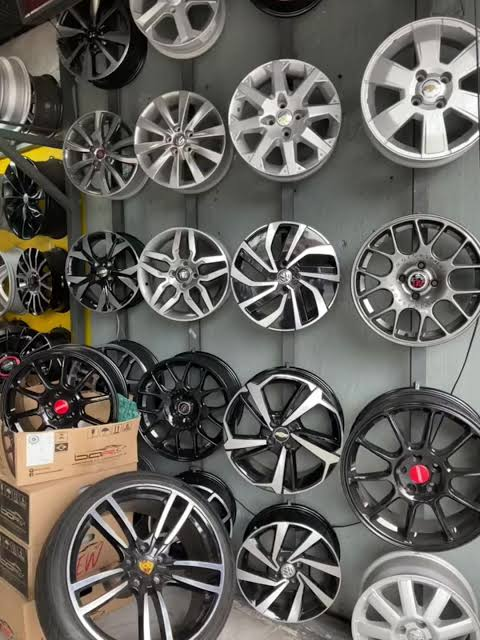

Remapeamento de ECU
O remapeamento de ECU consiste na reprogramação
da unidade de controle eletrônico do motor.
Esse procedimento pode otimizar a potência e o
torque, conforme as características do veículo
e os limites de segurança do motor.

Estética automotiva e detalhamento
Serviços especializados para melhorar a aparência
e conservar o veículo. Incluem limpeza profunda,
polimento, proteção da pintura e cuidados com
o interior, mantendo o carro bem cuidado.

Insulfilm e envelopamento
A aplicação de películas pode ajudar a reduzir
a entrada de calor e a exposição aos raios UV,
conforme o produto utilizado. O envelopamento
permite personalizar a aparência do veículo
e contribuir para a proteção da pintura original.

Rodas e pneus
Realizamos serviços relacionados à manutenção
de rodas e pneus, como alinhamento, balanceamento,
troca de pneus e inspeções, contribuindo para
a segurança e o desempenho do veículo.